Derbysieg mit klarer Kante – Starke Reaktion bringt verdientes 4:0
Zu Beginn entwickelte sich ein ausgeglichenes Derby mit leichten Vorteilen für den SC Leinefelde. Die Gäste kamen zu ersten Möglichkeiten, doch auf Jonas Lerch war Verlass. Mit starken Paraden hielt er unsere Mannschaft an diesem Tag im Spiel und sorgte dafür, dass wir in dieser Phase keinen Rückstand hinnehmen mussten.
Eiskalt zur Führung – Dornieden trifft zur Pause
Mit zunehmender Spielzeit fand die Papst-Elf besser in die Partie – und nutzte ihre erste klare Chance direkt. Nach starker Vorarbeit von Thomas Kahlmeyer blieb Fabio Dornieden cool und schob den Ball durch die Beine des Torhüters zur 1:0-Führung ein (34.). Ein Treffer, der spürbar Sicherheit gab und den Gegner dazu zwang, mehr Risiko zu gehen.
Zweite Halbzeit gehört dem SCH
Nach dem Seitenwechsel zeigte unsere Mannschaft eine klare Leistungssteigerung. Die Räume wurden größer, die Aktionen zielstrebiger – und diesmal auch konsequent genutzt. Zunächst war es Benito Schöneich, der nach einem abgewehrten Abschluss von Thomas Kahlmeyer zur Stelle war und überlegt zum 2:0 einschob (55.). Nur wenige Minuten später folgte die Vorentscheidung: Erneut war es Kahlmeyer, der den Angriff einleitete, und Fabio Dornieden vollendete den Konter eiskalt zum 3:0 (59.).
Kontrolle, Chancen – und der verdiente Schlusspunkt
In der Folge hatte unsere Mannschaft das Spiel komplett im Griff. Immer wieder erkämpften sich unsere Jungs im Mittelfeld die Bälle, ließen Leinefelde kaum noch zur Entfaltung kommen und erspielten sich weitere Chancen. Auch wenn nicht jeder Angriff sauber zu Ende gespielt wurde, blieb die Dominanz klar erkennbar. Den Schlusspunkt setzte schließlich Denys Akhtyrskyi kurz vor dem Abpfiff. Nach Vorlage von Fabio Dornieden traf er zum 4:0-Endstand (90.) und machte den Derbysieg perfekt.
Starke Mannschaftsleistung als Schlüssel
Unterm Strich steht ein auch in der Höhe verdienter Sieg, der vor allem durch eine geschlossene Mannschaftsleistung getragen wurde. Eine klare Steigerung zur Vorwoche – und der Beweis, welches Potenzial in dieser Mannschaft steckt, wenn sie es gemeinsam auf den Platz bringt.
Spieldaten
1. SC 1911 Heiligenstadt II – SG SC Leinefelde 1912 4:0 (1:0)
SC Heiligenstadt
Lerch – Kaufhold – Semper – Schäfer – Schöneich (56. Akhtyrskyi) – Spies (70. Roth) – Kahlmeyer (78. Ungewitter) – Strecker (83. Weidemann) – Pingel – Hanusch – Dornieden
SG SC Leinefelde 1912
Thriene (82. Wolfram) – Burghardt – Hebestreit – Gerbig – Kaltenhäuser (60. Dietrich) – F. Meyer (56. Schnur) – Schmalstieg – Wiederhold – N. Meyer – Buß – Wedekind
Schiedsrichter
Thormann-Stolz
Zuschauer
99
Tore
1:0 Dornieden (34.), 2:0 Schöneich (55.), 3:0 Dornieden (59.), 4:0 Akhtyrskyi (90.)
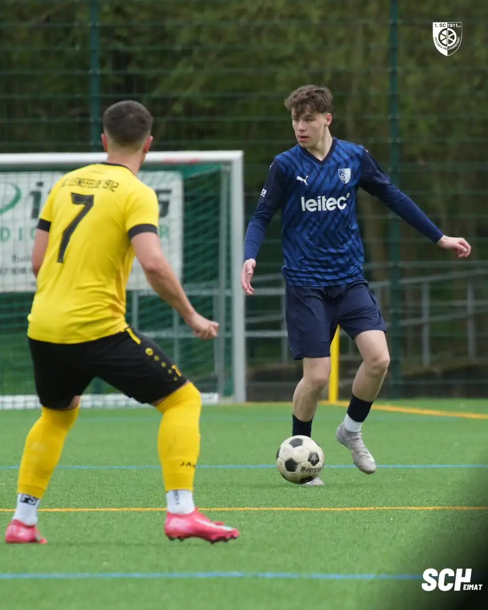
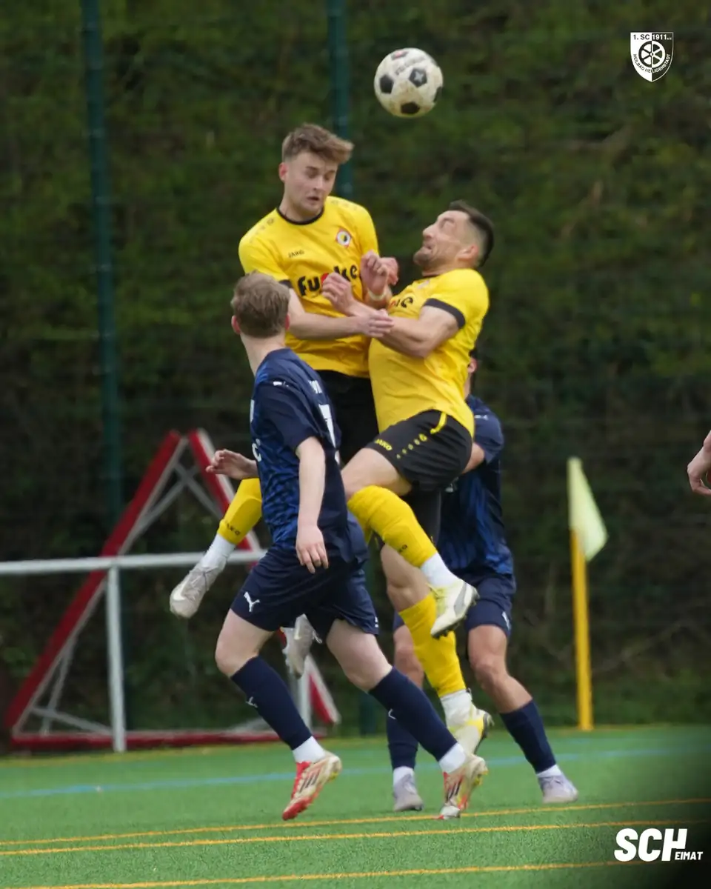
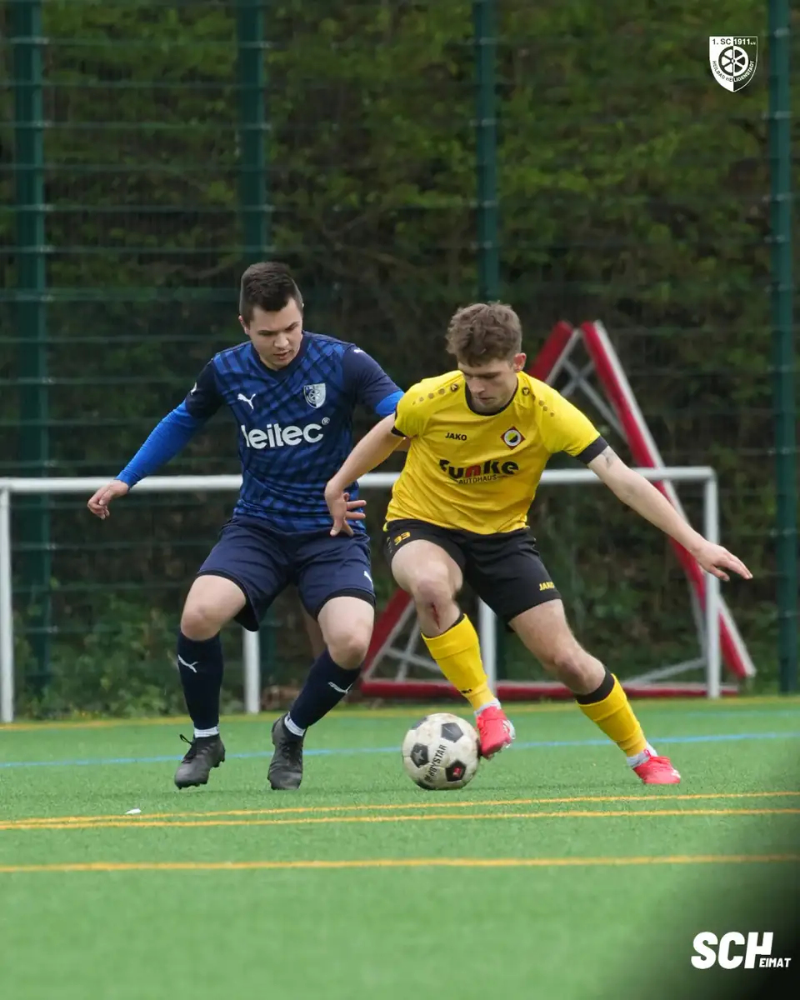
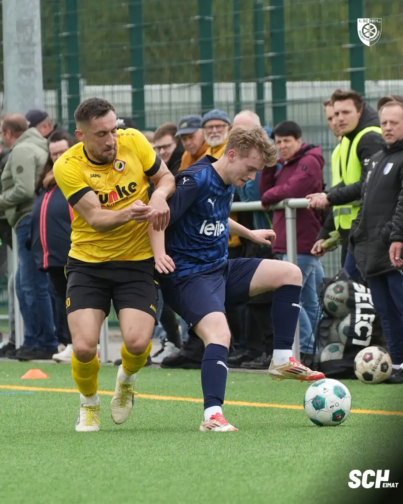
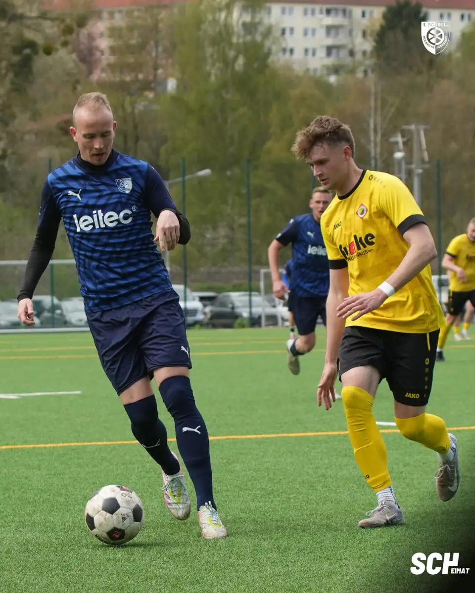
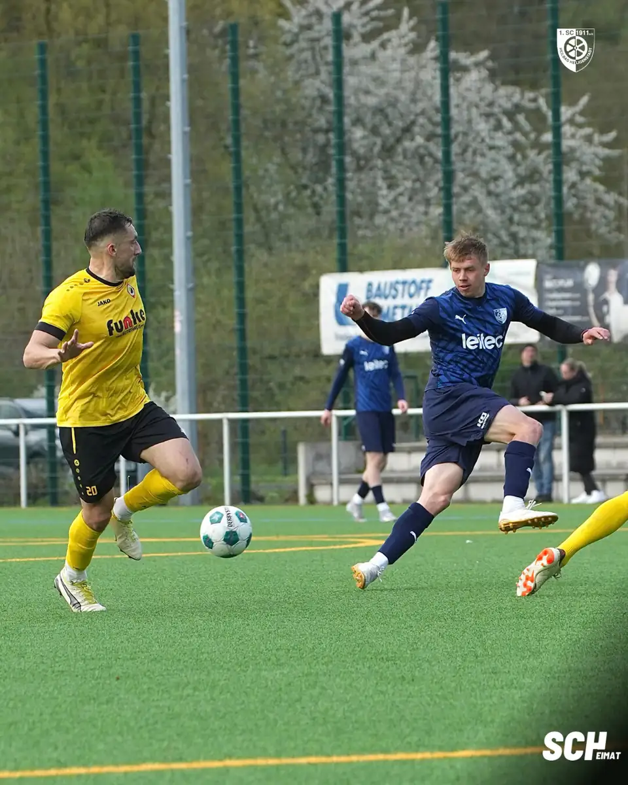
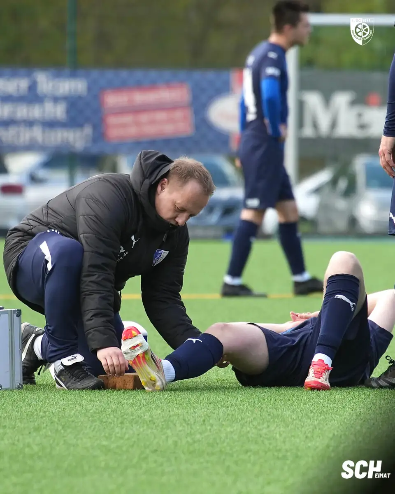
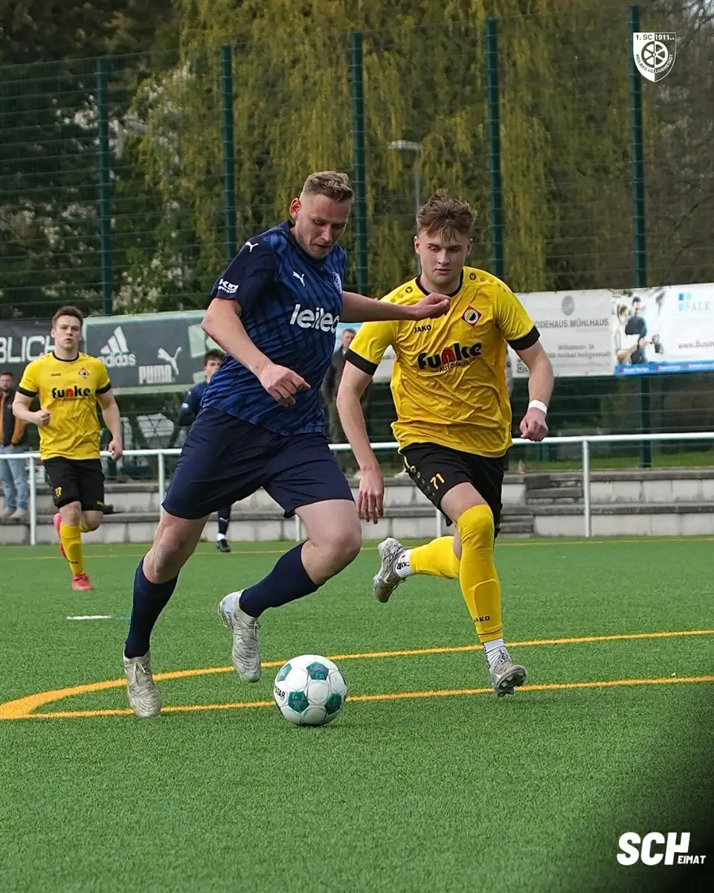
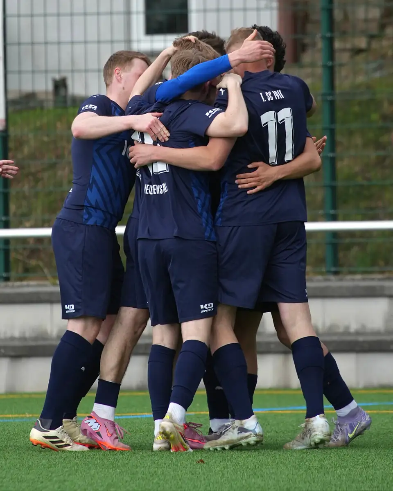
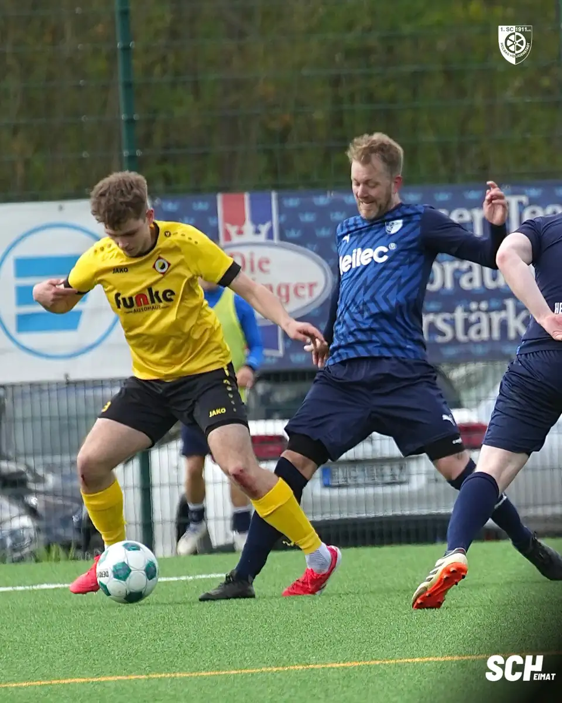
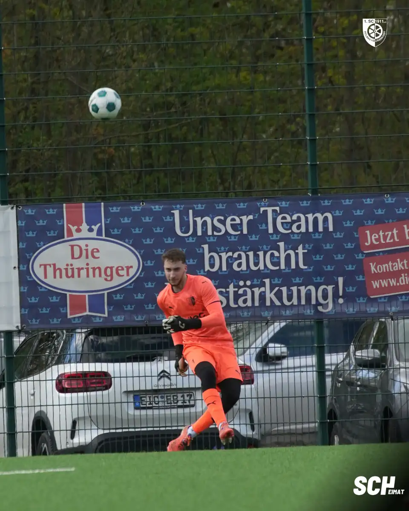
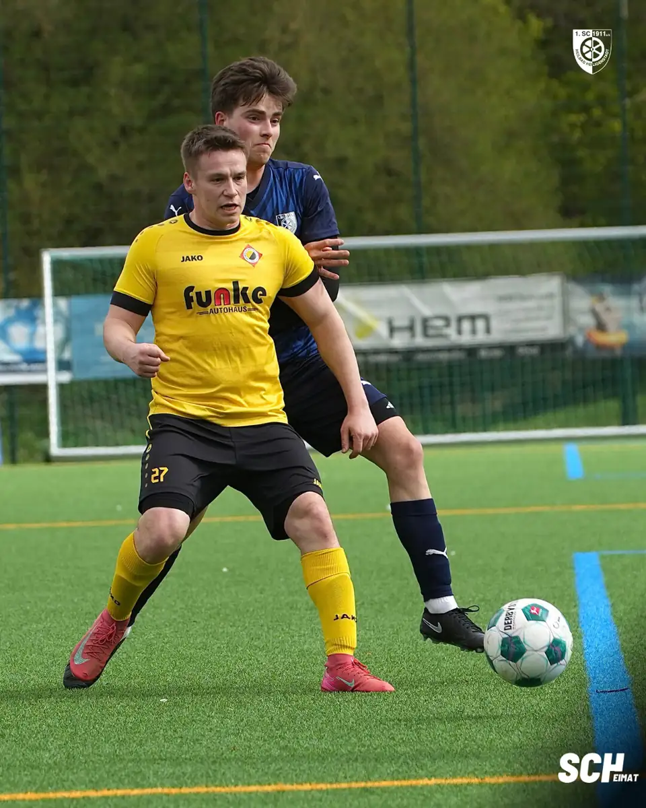